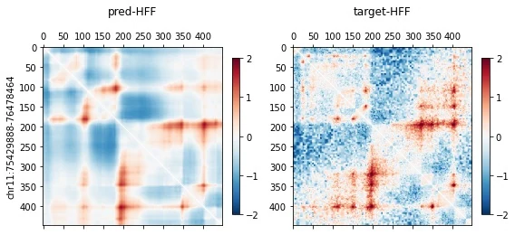

Predicting chromatin contacts from DNA sequence
Can a sequence-based model reproduce contact patterns at demonstration loci before it is applied to candidate regions associated with Neanderthal ancestry?
Yuan project · Akita
Akita contact-map prediction
Akita encodes a 1 Mb DNA sequence, learns one-dimensional features using convolutions, then forms a two-dimensional contact map with 2,048 bp bins. The project reproduced published-style demonstration windows by comparing predicted maps with HFF (human foreskin fibroblast) target maps. The proposed application concerns sequence perturbations at Neanderthal-associated loci.
HFF benchmark across two additional loci
The chromosome 17 prediction captures several local enriched contacts. On chromosome 15, the broad low-contact region along the edge is visible in both maps. The predictions are smoother than the targets. These comparisons establish a qualitative benchmark for future variant analyses.


Method reference · Akita model paper